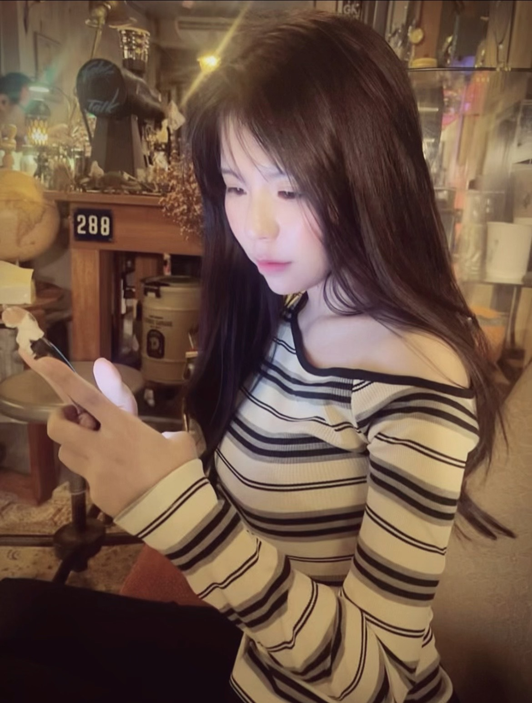
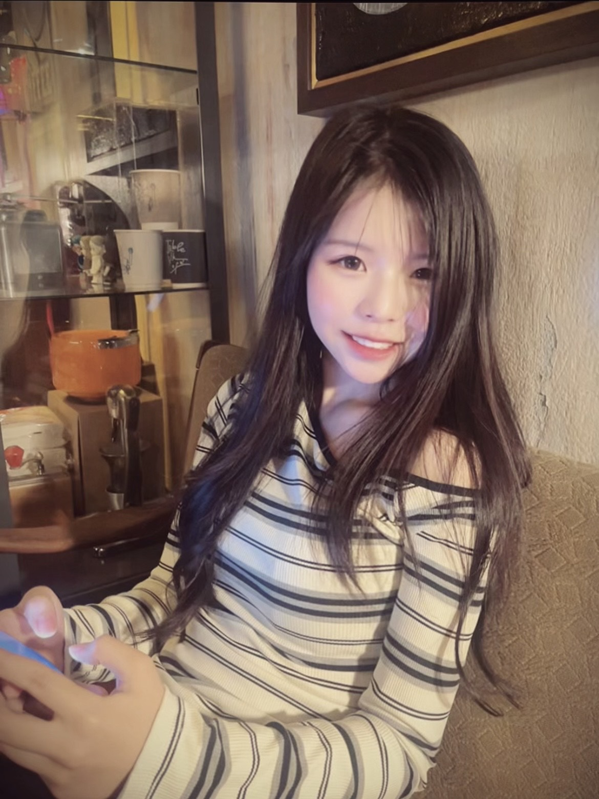

📌 基本資料
國籍：泰國
年齡：19 歲
🎯 興趣與學習方向
我的興趣是學習新科技、了解企業運作流程， 以及整理與分析相關資料。 我也喜歡學習語言，提升溝通能力，並在工作中培養細心與效率。
🙋♀️ 自我介紹
大家好！我是李敏瑛，來自泰國，目前在台灣就讀大學。 我喜歡探索不同的文化、美食與音樂， 希望能在這裡體驗更多有趣的事物， 也期待結交來自世界各地的朋友 💕
🌟 個人優點
個性開朗、親切有禮， 對人友善且容易相處。 做事認真負責，願意學習新事物， 面對工作態度積極。
🌱 個人缺點
有時對自己要求較高， 遇到事情容易緊張或想得比較多， 目前正學習調整心態， 讓自己能更有自信地完成工作。


💼 工作經驗（泰國）
曾協助文件整理、資料建立與基本審核， 並與同事進行日常溝通， 確保資料正確無誤。
📬 聯絡方式
Email： puridamachekuy@gmail.com
Instagram： @puridabechekau